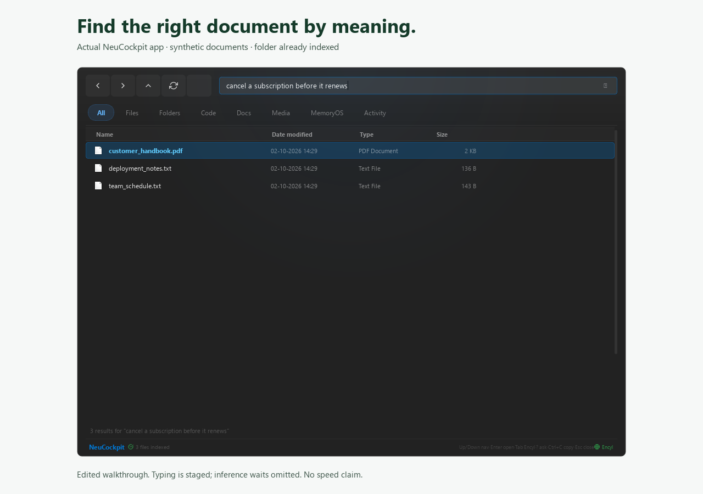

Remember the contents.
Find the file.
Forgot what you named that document? Describe what you remember. NeuCockpit searches your computer by meaning and helps you read the result with local AI.
Desktop builds for Windows, macOS, and Linux.
Local search and AI. Optional internet mode is off by default.

NeuCockpit / document search
You remember the project.
You need the document.
Old specifications, client notes, PDFs, and code tend to outlive their filenames. NeuCockpit builds a local index so you can search for what a file is about.
Search by meaning
Describe a topic or an idea across indexed documents. Review the matches and open the original file.
Read with local AI
Summarize a document or ask a question in MemoryOS. Check important answers against the source.
Know what gets indexed
The app can scan common folders automatically. Add extra folders yourself and check indexing progress before searching.
The campaign / Where’s that file?
The feeling is familiar.
You know the answer is somewhere on your computer. Start with a description of it.
This short campaign film illustrates the problem. It is motion graphics, not a measured screen recording. See the desktop screenshot above and try the installed app on your documents.
Zero-X / built by Rahul
Help shape the app around real work.
I’m Rahul, a student building NeuCockpit. I’m looking for people who work with documents and want to try finding a file they genuinely need.
Tell me where the app helps and where it gets in your way. We can start with a folder you’re comfortable testing.
Bring one file-finding problem.
Email me your operating system and the kind of documents you work with. Keep confidential documents on your own computer.
Email Rahul for setup help